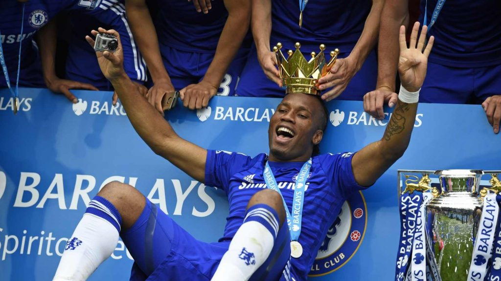

Didier Yves Drogba Tébily is an Ivorian retired professional footballer who played as a striker. He is the all-time top scorer and former captain of the Ivory Coast national team. He is best known for his career at Chelsea, for whom he has scored more goals than any other foreign player and is currently the club's fourth highest goal scorer of all time. Widely regarded as one of Chelsea's greatest players, Drogba was named in the Chelsea team of the 2010–2020 decade by Chelsea's fans. He was named African Footballer of the Year twice, winning the accolade in 2006 and 2009. After playing in youth teams, Drogba made his professional debut aged 18 for Ligue 2 club Le Mans, and signed his first professional contract aged 21. After finishing the 2002–03 season with 17 goals in 34 appearances for Ligue 1 side Guingamp, he moved to Olympique de Marseille, where he finished as the third highest scorer in the 2003–04 season with 19 goals and helped the club reach the 2004 UEFA Cup Final. In July 2004, Drogba moved to Premier League club Chelsea for a club record £24 million fee, making him the most expensive Ivorian player in history. In his debut season he helped the club win their first league title in 50 years, and a year later he won another Premier League title. His displays saw him named in the FIFA World XI for 2007. In March 2012, he became the first African player to score 100 Premier League goals. Just two months later, he scored in Chelsea's 2012 FA Cup Final win over Liverpool to become the first (and as of 2017, the only) player to score in four separate FA Cup finals. He also played in the 2012 UEFA Champions League Final, in which he scored an 88th-minute equaliser and the winning penalty in the deciding shoot-out against Bayern Munich.[9] After spending 6 months with Shanghai Shenhua in China, and one and a half seasons with Turkish club Galatasaray where he scored the winning goal in the final of the 2013 Turkish Super Cup, Drogba returned to Chelsea in July 2014. With a career record of scoring 10 goals in 10 finals winning 10 trophies at club level, Drogba has been referred to as the "ultimate big game player." He joined Canadian club Montreal Impact in 2015 as a Designated Player and played 41 matches over two seasons, scoring 23 goals. Drogba became a player–owner for Phoenix Rising of the United Soccer League in 2017, and retired a year later at the age of 40.
